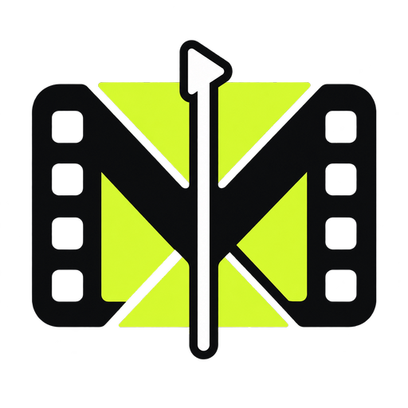

Loading release notes…
Check GitHub for the latest YTX Studio release.
Convert one file or a batch with the same FFmpeg format, codec, and color controls used by the editor.
Choose multiple video or audio sources and an output folder. YTX will process each file and keep the results in Downloads → Transfers.